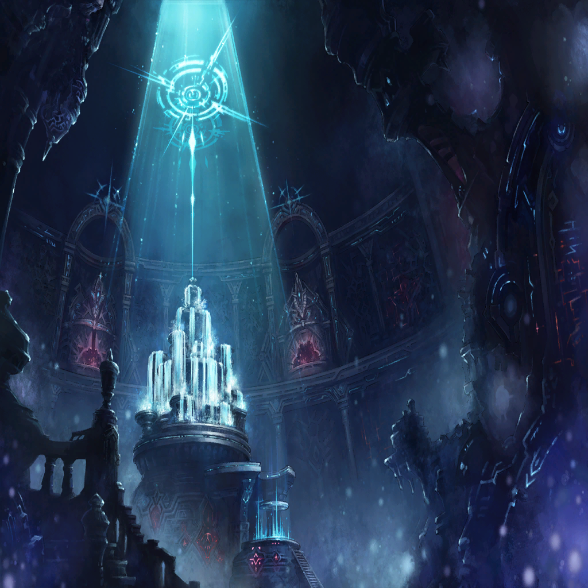

|
|  |

ディオス |
…ここまでの穢れとなると、
ティナの力が必要だな
一度退くべきだと思うが？ |

カムイ |
ああ、同感だ
だが、その前に―― |
ディオス |
おい…!? |
カムイ |
聖石ルシファー…
あのまま放置するわけにはいかないからな |
カムイ |
ロギ！ アマネ！
そちらも下がれるか |

ロギ |
ああ！ すぐに―― |
| 鬼のカタチをしたもの |
ァァァァァァアァアアアア…!! |

アマネ |
…ユディウス!?
再びアヴィスの手によって錬成されて…
もはや拙者の顔すらわからぬか…！ |
| 鬼のカタチをしたもの |
オォォォォォオォオォオォ!!! |
アマネ |
く…！ |

エドガー |
おっと、これは見せ場だな？ 任せとけ |
エドガー |
錬成開始。全銃身、緊急展開…!! |
エドガー |
今だ！ 走れ…！ |
アマネ |
た、助かった！ エドガー！ |
エドガー |
いいってことよ
その様子だと、一度退くんだろ？
殿は俺に任せとけ |
| アヴィス |
――、――――、――ぁ |
| アヴィス |
意識を、失っていたか…
だが、まだ生きている。私は… |
| アヴィス |
創世、を |
| アヴィス |
果たさな、ければ… |
| アヴィス |
…破損した心臓は、
錬金術で創り直せばいい |
| アヴィス |
流した血も、
錬成によって補うだけだ
問題は―― |
| アヴィス |
…もはや、暴走を始めた
この疑似聖石を止める手立てがないと
いうことか |
| アヴィス |
だが、まだ耐えられる
最後まで耐えてみせるとも… |
| アヴィス |
私は、必ず創世を――創世を？
なぜ、私は…何を願って―― |
| アヴィス |
――いや、願いならばこの胸に
世界の変革を願う“声”が、
今も確かに響いている… |
| アヴィス |
続けなければ…果たさなければ…！ |
| アヴィス |
…それだけの、血を流した
それだけの犠牲を強いたのだ…
ならば止まれん。止まれるものか |
| アヴィス |
“使った”命に釣り合うだけの価値を、
私はまだ、この世界に
残せてはいないのだから…!! |
|
| アヴィス |
おぉぉぉおぉおぉおおおお!!! |
| ？？？ |
――ここは、くらい |
| ？？？ |
つめたい、さむい、いたい、つらい
ここは、とても―― |
| ？？？ |
とても、くるしい |
| ？？？ |
どうして |
| ？？？ |
どうして？ |
| ？？？ |
どうして―― |
| |
貴女はここで、啼いているの？ |